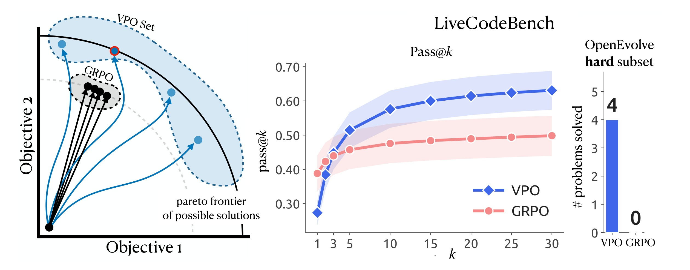
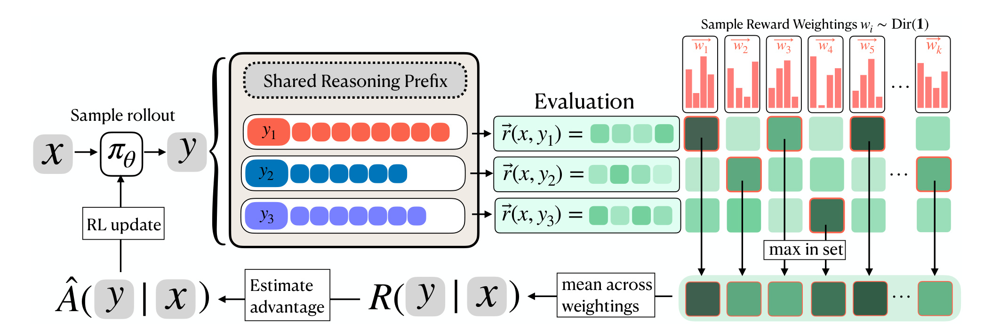
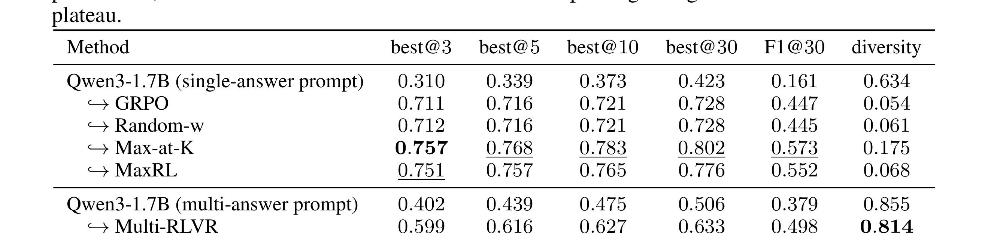
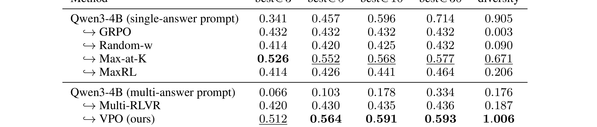

这里重写精读《Vector Policy Optimization: Training for Diversity Improves Test-Time Search》。论文入口：arXiv:2605.22817。作者来自 MIT、Improbable AI Lab、MIT-IBM Computing Research Lab、Sakana AI 等机构。本文提出 VPO，把后训练目标从单一标量奖励扩展到向量奖励覆盖，核心动机是让模型为 test-time search 生成多样且互补的候选，而不是在训练阶段过早塌缩到单一答案模式。
1. 背景和问题
当前 LLM 后训练常围绕单个标量 reward 优化，例如 GRPO、RLVR、DPO 或其他偏好优化方法。标量 reward 的好处是简单直接：每个回答得到一个分数，策略更新把概率质量推向高分答案。但当系统在测试时会采样多个候选，再用 verifier、unit test、reward model 或搜索过程选择最佳结果时，训练阶段的模式塌缩就会成为问题。模型如果只学会给出同一种高概率答案，best-of-k 或 pass@k 的上限会受限，因为多次采样只是同一答案的微小变体。 VPO 的核心问题是：如果 exploitation 已经由 test-time search 负责，训练阶段是否应该更重视 exploration 和 functional diversity？这和推荐系统中的多目标候选生成很像。一个排序模型如果只优化单一点击率，可能忽略长期留存、内容多样性、风险约束或用户不同偏好；一个后训练 LLM 如果只优化单一 reward，也可能丢失多条可行推理路径。VPO 把这个问题形式化为 reward vector，而不是单个 reward scalar。

Figure 1 展示 VPO 的动机：左侧是二维目标空间中的 Pareto frontier，标量 GRPO 往往把样本推向某个单一权重方向，而 VPO 希望覆盖多个 trade-off；中间 LiveCodeBench 曲线显示，随着 best-of-k 增大，保留多样候选的策略能持续获益；右侧开放式搜索任务说明，在 AlphaEvolve / OpenEvolve 这类系统中，模型不是一次回答结束，而是要为搜索过程提供可变异、可选择的候选。图的重点不是表面文本多样，而是功能多样：候选之间应在 reward components 上互补。 这篇论文值得重写，是因为旧笔记把它概括为“训练多样性改善搜索”，但没有解释多样性到底指什么。VPO 的多样性不是换词、换语气或随机采样温度，而是不同候选在 reward vector 上专长不同。例如代码题可以有多个 test case，数学或多跳 QA 可以有多个子目标，工具调用可以有多个环境状态，推荐可以有多个 persona 或业务指标。VPO 要求训练时承认这些目标维度，而不是在进入策略更新前就把它们压成单一分数。
VPO 还回应了一个常见误区：后训练中的“更强”不一定等于“单次答案最高分”。在有测试时搜索的系统里，模型更像候选生成器，而不是最终决策器。候选生成器的目标应包含 coverage、novelty 和互补性；最终选择由 verifier 或搜索过程完成。若训练阶段已经把所有概率质量压到一种答案，测试时搜索就失去意义。这个逻辑和 beam search 中 diverse beam、推荐中的 candidate diversity、规划中的多路径搜索都相通。 VPO 的背景也与 AlphaEvolve / OpenEvolve 这类开放式程序搜索有关。这类系统会反复采样、变异、评价候选程序。若底层模型只能给出相似候选，即使搜索框架很复杂，也探索不到远处解。VPO 试图从训练阶段改善候选分布，使模型输出在 reward space 上天然分散。
补充背景：VPO 的关键不是“让回答更丰富”，而是承认很多系统在测试时本来就会搜索。代码生成会跑 unit tests，工具调用会执行环境检查，多跳 QA 会用 verifier 或 reward model 选候选，推荐系统也会先生成候选再重排。若训练只把概率质量推向单一标量最优答案，测试时搜索看到的是很多相似样本，预算被浪费。VPO 把训练目标改成覆盖 reward vector，本质上是在为后续搜索准备有差异且仍然有价值的候选集合。
2. 方法
2.1 Vector reward：把单标量奖励扩展成目标空间
VPO 的出发点是：如果部署时会做 best-of-k、verifier 或程序搜索，训练时就不应把所有候选压到同一个标量最优答案。每个候选回答 $y_i$ 得到的不是单个分数，而是 reward vector：
符号解释：$y_i$ 是同一 prompt 下采样出的第 $i$ 个候选；$r_j(y_i)$ 是候选在第 $j$ 个 reward component 上的分数；$d$ 是目标维度数。代码任务中维度可以来自不同 test case，多跳 QA 中可以来自不同子目标，推荐中可以来自点击、满意度、多样性和风险等不同指标。
2.2 Dirichlet scalarization 和 VPO advantage
VPO 不固定一个业务权重，而是在 simplex 上采样多个权重向量，对候选集合做不同方向的 scalarization：
符号解释：$\mathbf{w}$ 是目标权重向量；$\alpha$ 控制 Dirichlet 分布形态；$s_i(\mathbf{w})$ 是候选 $y_i$ 在该权重方向下的标量分数。若 $\alpha$ 较小，采样更偏极端目标，鼓励候选专攻某些维度；若 $\alpha$ 较大，权重更均匀，候选更接近平衡方案。
在 GRPO 中，候选通常围绕单一组均值计算 advantage，低于平均的候选会被压低。VPO 的区别是：一个候选即使总体平均不是最高，只要在某个权重方向下有独特价值，就可以得到正向训练信号。这让策略保留 functional diversity，而不是只学习一个最稳妥的平均答案。
2.3 Test-time search 和推荐多目标候选生成
VPO 的 diversity 不是换词或升温采样，而是 reward-space coverage。提高 temperature 可能生成很多不同但没用的答案；VPO 要求候选至少在某些 reward component 上表现好。它最适合有 test-time search 的系统，例如代码生成、工具调用、多跳 QA、程序搜索、agent planning。若产品只允许一次低延迟回答，且没有候选选择过程，VPO 收益会下降，甚至牺牲 pass@1。
推荐系统里可以把 VPO 理解为多目标候选生成。最终 reranker 再强，也只能在候选集合里选择；如果候选阶段已经塌缩，重排无法恢复缺失方向。VPO 式训练可以让候选覆盖短期点击、长期满意、内容多样性、风险控制或新颖探索。但推荐 reward 有曝光偏差，不能直接把线上点击当干净 reward vector。更稳的起点是离线 persona、多 reward model 或模拟环境。

Figure 2 是理解 VPO 的方法总图。左侧从同一 prompt $x$ 采样多个回答 $y_i$，每个回答进入 reward vector 评估，而不是被压成单个分数；中间用共享 reasoning prefix 和多组权重方向计算 advantage，让不同候选在不同目标方向上获得训练信号；右侧再把训练出的策略用于 test-time search，由 verifier 或标量目标在候选集合中选择。它说明 VPO 的核心不是“让回答更随机”，而是让候选集合在 reward space 中覆盖更多有效方向。
这张图也把公式清单中的两个对象连接起来：$\mathbf{r}(y_i)$ 定义候选在目标空间中的位置，$\mathbf{w}^{\top}\mathbf{r}(y_i)$ 定义某个部署偏好下的临时标量化。普通 GRPO 往往只优化一个固定方向，低于组均值的候选会被整体压制；VPO 则允许同一批候选在不同 $\mathbf{w}$ 下重新排序。这样，一个答案即使不是全局平均最优，只要在某个子目标上很强，就不会被训练过程完全抹掉。Figure 2 中的 sample reward weightings 正是在表达这个机制。
放到推荐候选生成里，流程图的含义更直观。系统可以为同一用户请求生成多组候选：一组偏点击，一组偏长期满意，一组偏新颖探索，一组偏风险控制；最终重排再根据场景权重选择。若候选生成阶段已经只保留单一最优方向，后面的 reranker 没有素材恢复多样性。VPO 因此更适合“候选集合要服务多个未来目标”的系统，而不是只追求单次 top-1 的低延迟回答。
2.4 成本、安全和复现检查
VPO 增加训练成本，因为每个候选要计算多个 reward component，还要采样多个权重并计算 advantage。生产上应比较 pass@1、best@k、diversity 和 compute：若 best@k 提升但 pass@1 大幅下降，说明单次质量可能被牺牲；若 diversity 提升但 best@k 不升，说明只是表面分散；若需要极大 $k$ 才有收益，生产预算可能不允许。
安全也必须进入 reward vector 或 verifier。多样候选扩大了输出空间，也会扩大风险空间。工具调用和 agent planning 中，探索更多路径可能触发更多边界操作；若 verifier 只看功能正确，不看安全一致性，VPO 会把风险放大。
复现时还要特别区分训练期 diversity 和测试期 selection。VPO 训练期鼓励候选在多个 reward component 上占据不同优势，但最终部署仍需要 verifier、reranker 或业务权重选择输出；如果没有选择器，多样候选只会增加不确定性。方法章中的两条独行公式给出 reward vector 和权重标量化，Figure 2 则说明这些公式如何变成候选生成、advantage 计算和 test-time search 的闭环。把这三部分连起来，才能理解为什么论文关注 best@k 而不仅是 pass@1。
3. 实验结果
3.1 实验覆盖
论文覆盖 Maze、MuSiQue、EUREQA、ToolRL 等任务，指标强调 best@k、pass@k 和 diversity。这样的实验选择服务于论文主张：如果只看 pass@1，标量 GRPO 可能更强；如果看 test-time search 预算增长后的收益，VPO 更有优势。实验还比较了 GRPO、GDPO、Multi-RLVR 等变体，试图排除“只是采样更多”这一解释。
3.2 MuSiQue 结果

Table 1 单独呈现 MuSiQue held-out 结果。表中按不同模型和训练策略比较 best@k、pass@k 或类似指标，可以看到 VPO 在搜索预算增大时更占优。重要的是，VPO 不一定在最小 k 上全面胜出；它的收益来自 k 增大后的持续上升。对于多跳 QA，候选思路是否覆盖不同证据链，比单个答案概率更重要。这个表说明 VPO 的训练目标和 MuSiQue 的多步骤性质匹配。还要注意 diversity 指标与 best@k 的关系：如果 diversity 上升但 best@k 不升，说明只是表面分散；VPO 有价值的地方在于分散候选仍能被验证器或奖励函数选出更好答案。换言之，表里的 diversity 不是附属指标，而是解释 best@k 增益来源的关键证据。
3.3 Maze 结果

Table 2 展示 Maze 任务。Maze 天然具有多目标或路径选择特征，单一 reward 方向容易让策略偏向某类路线。VPO 通过 reward-vector scalarization 保留多个可行路径，因此在 best@k 和 diversity 上有优势。这个表也提醒我们：VPO 的效果最容易在“多个解都可能局部有效、需要搜索挑选”的任务中体现；若任务只有一个短答案且验证器弱，多样候选不一定有收益。读 Maze 表时尤其要把 best@k 和 diversity 联合解读，确认方法不是生成更多随机路线，而是在可验证目标上保留可竞争路径。
Table 2 的重点是功能多样性而非表面改写：只有当候选在 reward vector、best@k 或搜索预算下产生互补价值时，VPO 的训练目标才算被实验支撑。Maze 任务尤其能说明这一点，因为不同路径可能在长度、障碍、目标达成和鲁棒性上各有优势。
3.4 为什么不是简单增加 rollout
论文指出，VPO 在较少 rollout 下能超过给 GRPO/GDPO 更多 compute 的设置。这一结果支持一个判断：问题不是候选数量，而是候选覆盖。更多 rollout
如果来自已经塌缩的策略，只会重复相似答案；较少但经过 reward-vector 训练的候选，反而能覆盖更大的有效搜索空间。这个结论对 LLM agent 系统很重要，因为真实系统的 token 和工具调用预算有限，不能无限采样。
3.5 风险和边界
VPO 的实验仍是受控任务。真实生产 LLM 后训练面临 reward hacking、安全一致性、多目标权重漂移等问题。Reward vector 维度越多，越需要防止模型专门钻某一维漏洞。多样候选也可能增加不安全输出概率，因此 test-time verifier 必须可靠。对推荐系统来说，多样性还可能和用户体验一致性冲突：用户希望系统稳定理解偏好，而不是每次给出完全不同方向的候选。
3.6 Best@k 曲线的读法
VPO 的核心证据应看曲线斜率而不是单点。如果 best@1 不高但 best@k 持续上升，说明候选集合中有不同有效方案；如果曲线很快 plateau，说明采样更多没有新信息。论文结果显示
VPO 随 k 增长更能释放收益，这正符合训练目标。
3.7 Compute 对比
论文强调 VPO 不是靠更多 rollout 获胜。给 GRPO/GDPO 更多 compute 后仍不一定追上
VPO，说明候选分布的结构比采样数量更重要。这个结论对实际系统很关键，因为生产环境常常无法把 k 提得很高；如果候选质量结构更好，较小 k 就能获得搜索收益。
3.8 复现实验检查清单
VPO 的实验要同时看 pass@1、best@k、diversity 和 compute。若 best@k 提升但 pass@1 大幅下降，说明训练可能牺牲了单次质量；若 diversity 提升但 best@k 不升，说明只是表面分散；若需要极大 k 才有收益，生产预算可能不允许。理想结果是较小 k 下就能看到曲线斜率改善，并且 compute 对比公平。
还要检查 baseline 是否给足预算。论文强调 VPO 在更少 rollout 下能超过给 GRPO/GDPO 更多 compute 的设置，这一点比单点最高分更有价值。它说明瓶颈不是采样数量，而是候选分布结构。复现时应固定模型、数据、reward 评估次数和 verifier，再比较策略差异。
3.9 安全与失败案例
多样候选会扩大输出空间，也可能扩大风险空间。若 reward vector 没有安全维度，模型可能生成任务分高但不合规的候选；若 verifier 只看功能正确，风险会在 test-time search 中被放大。VPO 的生产落地必须把安全、合规和一致性作为 reward component 或硬过滤，而不是事后检查。尤其在工具调用和 agent planning 中，多样探索可能触发更多边界操作。
4. 总结
4.1 我的判断
VPO 的价值在于把 test-time search 的存在提前纳入训练目标。它提醒我们：如果部署时会用 best-of-k、verifier、程序搜索或多候选重排，训练时就不应只优化单一高分答案。这个思路对代码、Agent、RAG 和推荐多目标候选生成都值得关注。
4.2 工程启发与复现建议
复现时应先构造可信 reward vector，例如按 test case、子任务、persona 或多个 reward model 分维度打分。然后比较 pass@1 与 best@k 的 trade-off，不要只看单次回答。若迁移到推荐或 RAG，可以让模型生成多个候选 query、检索计划或解释，再由后续 verifier/reranker 选择。
4.3 局限与后续跟进
局限包括：reward vector 构造成本高；无 test-time search 的低延迟场景收益有限；多样性可能带来安全和一致性风险；大规模生产后训练仍需更多验证。后续应关注代码开源、reward-vector 数据格式、与 GRPO 在相同 compute 下的公平比较，以及
VPO 是否能改善真实 agent benchmark 的成功率而非只改善离线 best@k。
4.4 我会如何落地
我会优先在代码生成或工具调用中试
VPO，因为 reward vector 容易来自 test cases 或环境检查。推荐系统中可先离线构造 persona-based reward vector，再观察候选集合是否提升后续 rerank 的上限。不要直接用线上多目标业务指标训练，除非已有可靠反事实估计。
4.5 后续问题
最关键问题是 reward vector 如何构造、是否会被模型钻空子、以及
VPO 与 verifier 的配合。若开源代码发布，应重点看 advantage estimator、Dirichlet 超参数、reward normalization 和 diversity metric 实现。
4.6 后续观察清单
后续最值得跟踪的是代码开源后 advantage estimator 的实现、Dirichlet $\alpha$ 的敏感性、reward normalization 和 verifier 配合方式。VPO 的思想很适合有 best-of-k 或搜索预算的系统，但它不是通用单次回答优化器。判断是否采用时，应先问产品链路是否真的会看多个候选，以及 reward vector 是否足够可信. 补充一点，VPO 也提醒后训练评估不能只看一个平均分。只要部署链路包含多候选搜索，就应该单独报告候选间有效差异、verifier 命中率、失败样本类型和安全过滤比例。否则所谓 diversity 可能只是文本表面变化，无法证明它真的提升了搜索空间。